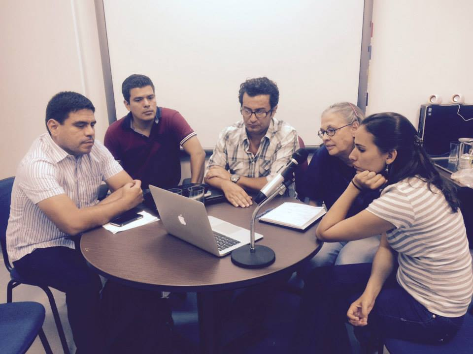
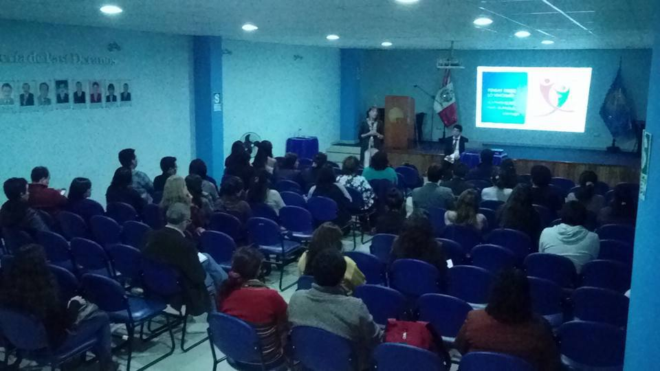
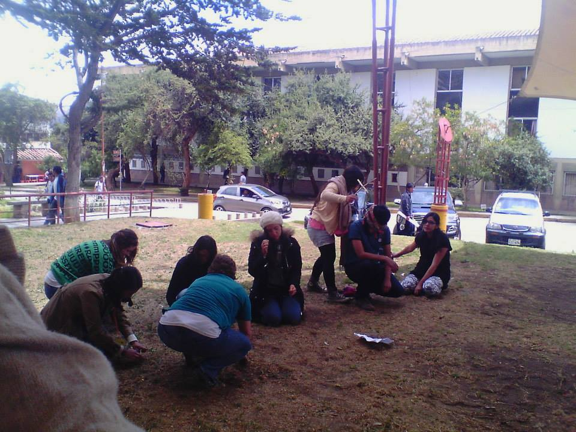

cipsicologica@gmail.com
Tel: 934053831
NUESTRAS ACTIVIDADES
-

TALLER - RASTREANDO MIS TENSIONES
Taller de diagnóstico participativo realizado en Laboratoria con un grupo de agradables y activas jóvenes con quienes desarrollamos inductores que permitieron la posibilidad de recoger expresiones de sentido en relación a las dificultades más frecuentes en su desenvolvimiento personal.
-
XXXV CONGRESO INTERAMERICANO DE PSICOLOGÍA
Nuestra participación en este evento ha sido una experiencia enriquecedora, como espacio de diálogo entre quienes compartimos diversos intereses y orientaciones, no sólo desde la Psicología, sino interdisciplinarmente. Esperamos encontrarnos en próximos eventos
-
SEMINARIO: FAMILIA, VÍNCULO Y SUBJETIVIDAD
Evento realizado el 22 de abril en el Colegio de Psicólogos de Arequipa.Lo recaudado en este evento será destinado a la publicación de la Revista "Epistemología, Psicología y Ciencias Sociales", esta producción cientíica está pensada como un espacio de difusión de alternativas contrahegemónicas desde las Ciencias Sociales.
-

V CONGRESO NACIONAL DE JUVENTUDES - ANCASH
Participamos en el V Congreso Nacional de Juventudes, que se llevó a cabo el 17, 18 y 19 de Setiembre en la ciudad de Huaraz - Ancash, representados por nuestra compañera Máriori Quispe Carcasi, buscando visibilizar nuestras propuestas desde la Psicología y la promoción de espacios participativos con niñas, niños, adolescentes y jóvenes.
-
I CONGRESO NACIONAL DE GRUPOS DE INVESTIGACIÓN
Presentación del Centro de Investigación Psicológica Histórico-Cultural, el cual tuvo lugar dentro del marco del "I Congreso Nacional de Grupos de Investigación de Estudiantes de Psicología" realizado en la Universidad Nacional de San Agustín. Agradecemos la concurrencia a dicha presentación y como lo repetimos durante la misma, extendemos una invitación abierta a quienes deseen ser parte de este colectivo.
-
JORNADAS DE PSICOLOGÍA HISTÓRICO CULTURAL Y SUBJETIVIDAD
Se llevo a cabo con éxito las conferencias y talleres de este evento causando gran satisfacción por parte de profesores y alumnos de nuestra escuela nos colma de alegría tu gran actuación en el evento !muchas gracias! gran amigo Alfredo Pérsico Gutiérrez
-
II FERIA DEL LIBRO PSICOLÓGICO
Se llevo a cabo con éxito las conferencias y talleres de este evento causando gran satisfacción por parte de profesores y alumnos de nuestra escuela nos colma de alegría tu gran actuación en el evento !muchas gracias! gran amigo Alfredo Pérsico Gutiérrez
-

MESA REDONDA "IMPORTANCIA DE LA CONCIENCIA DESDE LA PERSPECTIVA D
Se llevo a cabo con éxito las conferencias y talleres de este evento causando gran satisfacción por parte de profesores y alumnos de nuestra escuela nos colma de alegría tu gran actuación en el evento !muchas gracias! gran amigo Alfredo Pérsico Gutiérrez
Galeria de fotos
- 
- 
-

- 
-